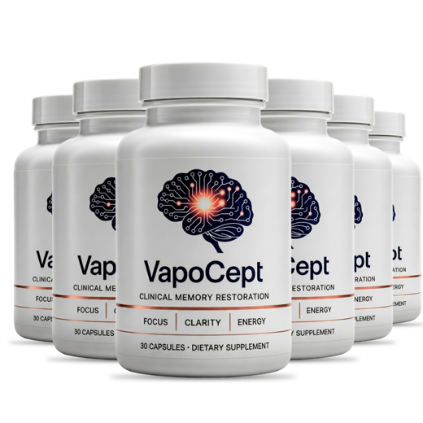
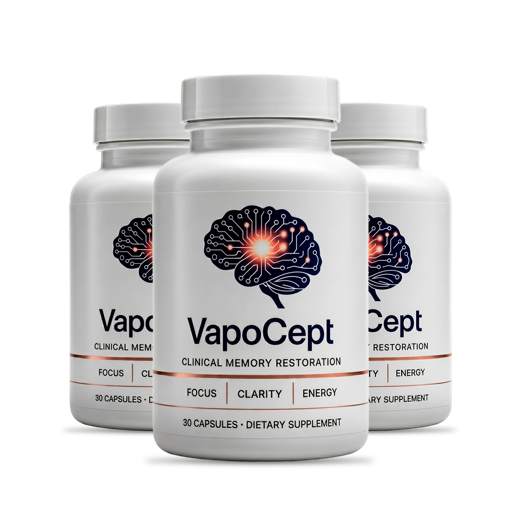
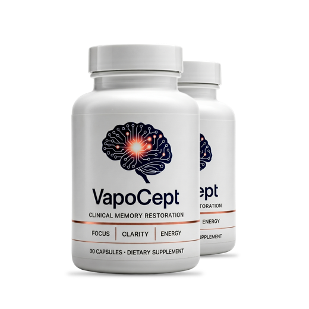

VapoCept Results: How Long Before You Notice Anything?
The ads talk in days. The research behind its ingredients talks in months. Here's a realistic timeline, and a way to measure it that doesn't rely on your memory.
Key takeaways
- Don't expect a same-week change. VapoCept has no stimulant, and its lead ingredient, ginkgo, has been studied over months, not days.
- Ginkgo sets the clock. Most ginkgo trials ran 12 to 24 weeks, using a more concentrated standardized extract than VapoCept's 4:1.
- Several ingredients won't show up at all. Glucosamine is a joint ingredient, and lutein at about 1.25 mg is close to dietary levels.
- Measure, don't guess. Take a memory test before the first capsule and again around day 50, and keep a one-line daily note.
- Decide by about day 50. The 60-day guarantee on official orders runs out before a full ginkgo trial would, so plan for it.
How long do VapoCept results take? Expect nothing obvious in the first two weeks. If its ginkgo-led formula does anything for you, the most plausible window is weeks six to twelve, because ginkgo trials typically ran 12 to 24 weeks. Track it with a before-and-after memory test and decide by about day 50, inside the 60-day guarantee.
That answer disappoints people who saw an ad promising sharper thinking by the weekend. We'd rather disappoint you now than have you give up at day ten, or keep paying past the point where it's clearly not working. Below is a timeline built from what each ingredient's research actually looked like, adjusted for the doses on VapoCept's label.
If you want the full formula first, our VapoCept review checks every dose against the research. This page is about time: when to look, what to look for, and when to stop.

VapoCept: check today's price
A ginkgo-led daily capsule with turmeric, lutein and green tea, every dose printed. One capsule a day, stimulant-free. Sold only on the official site, with a 60-day money-back guarantee.
See the official price →How long does each VapoCept ingredient take to work?
Each of the six ingredients runs on its own clock, and at its own dose. This table lines them up. The "research timeline" column describes how long typical studies ran, not a promise that VapoCept matches them.
| Ingredient | Dose per capsule | Typical research timeline | What to expect at this dose |
|---|---|---|---|
| Ginkgo biloba leaf extract (4:1) | 100 mg | 12 to 24 weeks, mostly with EGb 761 at 120 to 240 mg a day | The most likely source of any effect; slow and modest if it comes |
| Turmeric root extract (30:1) | 50 mg | Several months, usually with hundreds of mg of formulated curcumin | Unlikely to be noticeable on its own |
| Marigold extract (5% lutein) | 25 mg (about 1.25 mg lutein) | 4 to 12 months, usually about 10 mg lutein a day | Close to dietary intake; no felt effect expected |
| Green tea extract (50% EGCG) | 15 mg | Acute studies use cups of tea or hundreds of mg | Far below studied amounts; no felt effect expected |
| Glucosamine sulfate | 250 mg | Joint studies run 8+ weeks at about 1,500 mg | Not a memory ingredient; little cognitive evidence |
| Bamboo leaf extract (70% silica) | 5 mg | No cognitive research timeline | No felt effect expected |
Read that honestly and the picture is clear. Ginkgo is the ingredient that decides whether VapoCept does anything you can feel. Everything else is either too small to measure on its own or aimed at something other than thinking.
Why is ginkgo the ingredient that sets the timeline?
Ginkgo biloba is the one ingredient on the label with a long research history on attention and memory. The work most often cited used a specific extract called EGb 761, standardized to 24% flavone glycosides and 6% terpene lactones, at 120 to 240 mg a day. Studies that found any benefit generally needed at least six weeks, and many ran three to six months. It's thought to act partly through blood flow and partly as an antioxidant, both of which are slow, cumulative processes.
There's an important caveat. VapoCept's ginkgo is a 4:1 extract, meaning roughly four parts leaf went into one part extract. EGb 761 is far more concentrated, closer to 50 parts leaf to one. So 100 mg of a 4:1 extract isn't comparable to 100 mg of the trial extract, and the label doesn't say how much flavone glycoside it carries. If ginkgo's effects scale with its active compounds, you should expect a gentler and slower result than the trials, not a faster one.
It's also fair to say ginkgo's evidence is mixed. A large US trial in older adults, the Ginkgo Evaluation of Memory study, found that ginkgo didn't prevent dementia over about six years. Smaller studies on attention and day-to-day memory in healthy or mildly forgetful adults have been more encouraging. Our guide to ginkgo biloba for memory goes through both sides.
What do realistic VapoCept results look like?
Smaller than the ads, and closer to what the label itself claims. The bottle says "Supports Focus and Mental Clarity" and lists three words: focus, clarity, energy. It doesn't promise better memory scores, and it certainly doesn't promise to reverse decline.
So a good outcome looks modest. Fewer foggy afternoons. Holding your place in a conversation a bit more easily. Losing your train of thought less often when someone interrupts. Those are the kinds of attention effects that the better ginkgo studies reported, and they're the right yardstick here.
What you shouldn't expect: a jolt of energy like coffee, a sudden return of names you've been forgetting for years, or anything that feels like a prescription drug. Expectations set by the ad, not the label, are behind a lot of the "it did nothing" verdicts.
What should you notice week by week on VapoCept?
Here's a realistic sequence. Everyone's different, and plenty of people will notice nothing at all, which is a valid result rather than a failure of patience.
Weeks 1 and 2: setup, not results
Little to nothing. VapoCept has no caffeine, so there's no immediate lift, and ginkgo doesn't act overnight. If you feel dramatically sharper on day three, it's most likely expectation. This is the time to check tolerance (any stomach upset, headache or unusual bruising) and to lock in the daily habit.
Weeks 3 to 5: early signal, if any
The first window where a small change is plausible: a bit less afternoon fog, a slightly easier time holding a thought while you're interrupted. It's still well below what most studies could measure. Keep writing your one-line notes. Don't adjust the dose. If a stomach upset or headache from the first week hasn't settled by now, try taking the capsule at the start of a meal, and check with your doctor if it persists.
Weeks 6 to 8: the decision window
This is where ginkgo studies start to report differences, and where a real signal would start to separate from day-to-day noise. It's also where the 60-day guarantee runs out. Retest around day 50, compare against your baseline, and decide.
Weeks 9 to 12 and beyond: the full trial
If you kept going, this is where ginkgo's stronger published results sit. If 12 weeks of consistent use has produced nothing you can point to, VapoCept probably isn't doing much for you, and continuing is spending money on hope.

How do you track VapoCept results without fooling yourself?
Memory supplements have a measurement problem built in. You're using your memory to judge whether your memory improved. Mood, sleep, a stressful week or simply wanting the purchase to work all color that judgment. A little structure fixes most of it.
- Baseline before the first capsule. Take our free 3-minute memory test and write down the score and the date.
- A one-line daily note. Sleep quality, one word for focus (sharp, okay, foggy) and anything unusual. Thirty seconds a day.
- A mid-point check at day 30. Retake the test. Don't decide yet, just record.
- The decision test around day 50. Same test, same time of day, same conditions as the baseline.
- Two or three concrete markers. Pick things you can count: names forgotten at work this week, times you walked into a room and blanked, how often you reread a paragraph.
Take each test at the same time of day and after similar sleep. A score taken after a bad night tells you about the night, not the capsule. If your day-50 numbers and your notes both point the same way, trust them. If they disagree, trust the numbers.
What can slow down or hide VapoCept results?
Most disappointing supplement trials fail for ordinary reasons, not chemical ones. The usual suspects:
- Missed days. Three skipped capsules a week turns a cumulative ingredient into an intermittent one.
- Poor sleep. Short or broken sleep hits memory harder than any supplement can offset. Our piece on sleep and memory explains why.
- Stress and overload. A frantic month at work will mask small improvements.
- Medications. Some sleep aids, antihistamines and other common drugs dull memory. Ask your pharmacist if anything you take has that effect.
- Changing several things at once. Start a new diet, a new exercise plan and VapoCept the same week and you won't know which one did what.
None of these are reasons to give up early. They're reasons to note what else is happening, so your day-50 decision is about the capsule and not about a rough month.
Is 60 days long enough to judge VapoCept?
It's long enough for an early verdict, not a final one. The 60-day money-back guarantee on official orders closes before the 12-week mark where ginkgo's stronger results sit. That's a common tension in this category, and you should plan for it rather than discover it on day 61.
The workable approach: start the day the bottles arrive, retest at about day 50, and if there's no hint of change at all, use the guarantee. If there's a small but consistent improvement in your scores and notes, continuing to the 12-week mark is a reasonable bet. Read the exact refund steps on the order page before you buy, since many sellers ask you to return the bottles and cover return postage, and that transit time counts.
What if you see no VapoCept results after 60 days?
Then you have an answer, and it cost you less than a year of hoping. Use the guarantee if you're inside the window, and don't feel you've failed the product or that it failed you. Ginkgo simply doesn't help everyone, and a 4:1 extract is a gentle version of it.
Before you try anything else, look at the basics that move memory more than any capsule: sleep, regular walking, blood pressure, hearing, and the medications you take. If you still want a supplement, consider one that works through a different route. Bacopa-based formulas, for example, have their own research base and an 8 to 12 week timeline of their own. Our VapoCept vs Memopezil comparison explains how the two approaches differ.
How many bottles do you need to see VapoCept results?
At one capsule a day, each bottle is 30 days. Two bottles get you to day 60, just enough for the early verdict. Three bottles carry you through the full 12-week window. Six is a half-year supply.
At prices published at the time of writing, that's about $2.63 a day on the 2-bottle package (plus $9.99 shipping), $2.30 on three bottles and $1.63 on six, both with free US shipping. Prices change, so check the official page. Whatever you pick, divide the total by the number of days it covers, add shipping, and compare that daily figure rather than the per-bottle price. It's the number that tells you what a full 12-week trial really costs.

2 Bottles · Starter $79/bottle Check Availability → + $9.99 shipping 6 Bottles · Best Value $49/bottle Claim Discount → Free US Shipping 3 Bottles · Popular $69/bottle Claim Discount → Free US ShippingPrices shown are the manufacturer's published rates at the time of writing and can change without notice.
For a first order, three bottles matches the timeline best. You can still make your guarantee decision at day 50, and if it's working you won't hit a gap in the middle of the trial.
When should you stop waiting and see a doctor?
Don't use a supplement trial to put off a medical question. If memory problems are sudden, getting worse quickly, or affecting your safety or daily life (missed bills, getting lost on familiar routes, repeating the same question within minutes), see a doctor now rather than after 12 weeks of capsules.
Many causes of memory trouble are treatable, including thyroid problems, low vitamin B12, sleep apnea, depression and medication side effects. VapoCept is a daily supplement labeled for focus and mental clarity. It doesn't treat or prevent dementia or Alzheimer's. If you're comparing options, our 2026 memory supplement rankings show how it stacks up against formulas with different timelines.
VapoCept: check today's price
A ginkgo-led daily capsule with turmeric, lutein and green tea, every dose printed. One capsule a day, stimulant-free. Sold only on the official site, with a 60-day money-back guarantee.
See the official price →Frequently asked questions
Can VapoCept work in the first few days?
It's unlikely. VapoCept has no caffeine or stimulant, so there's no immediate lift, and ginkgo is studied over weeks to months. A sharp change in the first few days is more likely to be expectation or a good night's sleep than the capsule.
Will VapoCept results last if I stop taking it?
Nobody has studied VapoCept itself, so there's no direct answer. With cumulative ingredients like ginkgo, any benefit is generally expected to fade gradually after stopping rather than persist indefinitely. Retest a few weeks after you stop if you want to know for yourself.
Does taking VapoCept at a different time change how fast it works?
Probably not in any way you'd notice. The label suggests 20 to 30 minutes before a meal, and a meal with some fat may help the turmeric and lutein absorb. Consistency matters far more than the exact hour.
Why do some people say VapoCept did nothing for them?
Several reasons are common: judging it after one or two weeks, missing days, poor sleep or stress during the trial, or simply being someone the ingredients don't help. The doses of lutein, green tea and turmeric are small, so the formula leans heavily on its ginkgo.
Should I take two capsules to get results faster?
No. The label says one capsule a day and not to exceed the recommended dose. More ginkgo and turmeric raises bleeding and stomach concerns without evidence that it speeds anything up.
What's a meaningful change on a memory test?
One higher score could be noise. Look for an improvement on your day-50 retest that matches what your daily notes say, taken under similar conditions to the baseline. A consistent direction across both is more meaningful than the size of a single jump.
Do VapoCept results differ by age?
There's no product data by age. Ginkgo research has mostly involved middle-aged and older adults, and the effects reported were modest. Younger people with no memory complaints have less room to notice a change.
Ready to run a proper 60-day test?
VapoCept prints every dose, costs a one-time charge and carries a 60-day money-back guarantee on official orders. Check the current package prices.
See VapoCept's official price →Related: VapoCept review 2026 · Free 3-minute memory test · Ginkgo biloba for memory · Sleep and memory · Best memory supplements of 2026